11 |
あそびかた |
 |
●画面の見かた
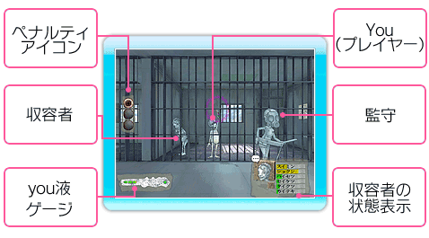
●操作方法 このゲームは、Wiiリモコン、Wiiリモコン＋ヌンチャク（ヌンチャク・スタイル）のいずれの操作方法でも操作することができます。 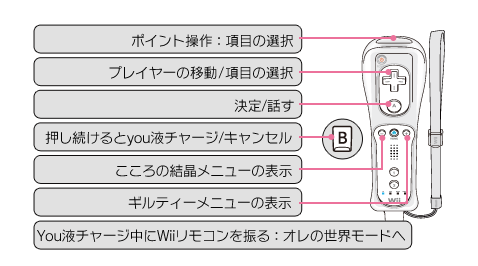 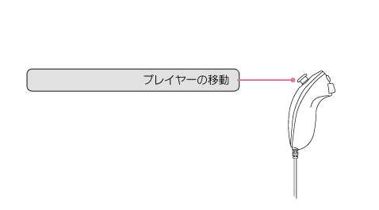
●ゲームの目的：収容者から話を聞きだそう
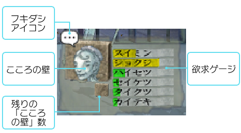 このゲームの目的は、ディシプリンに収容された同室の収容者のお世話をしながら収容者の言葉に耳を傾け話を聞きだすことです。収容者から話を聞きだすうちにディシプリンに潜む謎が徐々に明らかになっていきます。話したい収容者をポインターで選んで
ただし、収容者は2～4枚の『こころの壁』を持っており、常に話したい気分になっているとは限りません。収容者から話を聞き出すためには『こころの壁』を破壊する必要があります。ギミックを起動して収容者の欲求を解消することで、『こころの壁』にダメージを与えることができます。
収容者が話したい気分になると画面にフキダシアイコンが出現します。
収容者の会話を聞きだすと『こころの結晶』が出現します。この『こころの結晶』を入手していくことがプレイヤーの目的となります。
●会話：収容者の欲求を解消してあげよう
時間が経過すればするほど収容者の欲求が高まっていきます。最初は無口な収容者も、欲求を解消してあげればプレイヤーにこころを開いてくれるかもしれません。
◆欲求ゲージの見かた 欲求の高まりに合わせて欲求ゲージの色が緑、黄、赤の順番に変化していきます。欲求ゲージが黄色になると収容者たちは欲求行動を取り始めます。欲求ゲージが満タンになると、収容者は「異常行動」を起こしてしまいます。異常行動を1回起こすと、看守からペナルティ（→P.14）が1つ課されます。
収容者が異常行動を起こす前に、欲求を解消してあげましょう。
●溜める：you液を溜めてギミックを起動 ◆you液チャージ 監守に見つからないように周囲に注意しながら、ボタンを押し続けyou液チャージをしましょう。ゲームが進行しyouコンが成長すると、より強いyou液を発射することができるようになります。
●狙い打つ：オレの世界モード
◆ギミックを起動させる you液をある程度溜めてからを押したまま、Wiiリモコンを画面に向けて振ることで『オレの世界モード』が発動します。ギミックに向けてyou液を発射しましょう。
◆オレの世界モード時の操作方法 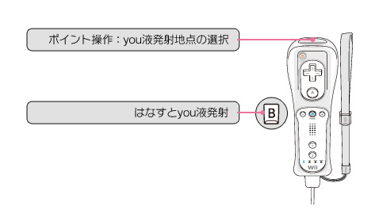
●隠れる：監守に見つかってはいけない ◆安全な場所に移動する you液チャージをしているところを監守に見つかるとペナルティが1つ課されます。監守に見つからないように監守の動きをよく観察し、安全な場所でyou液チャージをしましょう。
受けたペナルティが3つになると“おひとりさま”と呼ばれる部屋に連れて行かれてしまいます。
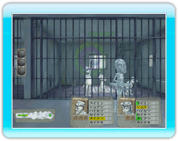 監守の背中側に回り込めばyou液チャージが可能
●探す：部屋の中のギミックを見つけ出す
youたちが収容されている部屋のあちこちにギミックがしかけられています。ギミックが隠されている場所にyou液をかけるとギミックが発動します。収容者の欲求に応じてギミックを起動しましょう。
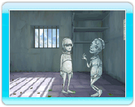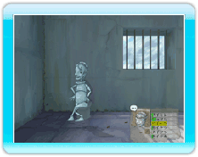 例：収容者のハイセツ欲求が高まったのでトイレを起動
最初から起動できるギミックは5つしか存在しませんがゲームが進行するとより多くのギミックが起動できるようになります。オレの世界モードでカーソルが変化する場所を探してみましょう。 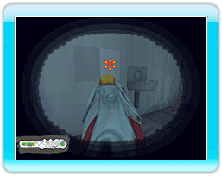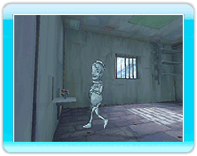 一見なにもなさそうな壁だが、you液をかけるとギミックが出現！
●こころの結晶を取得 ◆収容者のこころを狙い撃つ こころの壁をすべて壊すと、ハートが表示されます。
ハートにナイフが刺さっている場合は、まだ収容者と会話をする必要があります。刺さったナイフを抜くことができたら、you液を収容者にかけましょう。収容者の『こころの結晶』を取得することができます。これで収容者を一人クリアしたことになります。
ハートが完全に表示されたら収容者を撃て！
●収容者には収容期限が存在する 各収容者には収容期限が存在します。その収容期限内に『こころの結晶』を取得できなかった場合、その収容者はどこかに消えてしまいます。収容者が消えてしまった場合も、いずれまたどこかで出会うことができますので再度チャレンジしてください。
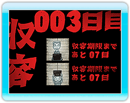 各収容者の収容期限は一日の始まりに表示されます。
|
 |
 |
 |